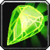
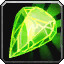

SPÉCIALISATION DESTRUCTION
SPÉCIALISATION DESTRUCTION Le Démoniste est une classe de lanceur de sorts à distance. La particularité de la spécialité Destruction réside dans son dps aux dégâts direct qui est un burst puissant. Il fait des dégâts avec des sorts de type magie et malédiction. Il est efficace en monocible, et moyennement en multicible.
C'est une classe accessible nécessitant de l’anticipation dans la gestion de son familier.
En PvP c'est une spécialisation assez dure à jouer, car cette classe a peu de survie, mais elle a pas mal de controle pour s'en sortir.
Elle est très utile en bg, mais moins viable pour de la 2c2 en arène. elle sera par contre adaptée pour de la 3c3 ou 5c5.
 LES SORTS LES PLUS UTILISÉS
LES SORTS LES PLUS UTILISÉS
De dégâts
 Trait de l'ombre
Trait de l'ombre Immolation
Immolation Voile mortel (un petit fear instant)
Voile mortel (un petit fear instant) Drain de vie (utile quand on est en fin de vie)
Drain de vie (utile quand on est en fin de vie) Drain d'âme (LE sort pour vous procurer des Fragments d'âme) Pluie de feu (sort de zone utile pour repérer un camouflé)
Drain d'âme (LE sort pour vous procurer des Fragments d'âme) Pluie de feu (sort de zone utile pour repérer un camouflé) Feu de l'âme
Feu de l'âme Flammes infernales (Sort de zone au corps à corps qui vous inflige aussi des dégâts)
Flammes infernales (Sort de zone au corps à corps qui vous inflige aussi des dégâts) Furie de l'ombre (Stun AoE)
Furie de l'ombre (Stun AoE) Tir (utilise votre baguette)
Tir (utilise votre baguette)De soutiens
 Malédiction des éléments (utile si vous avez un Prêtre ombre ou mage avec vous)
Malédiction des éléments (utile si vous avez un Prêtre ombre ou mage avec vous) Malédiction des langages (Utile contre les caster)
Malédiction des langages (Utile contre les caster) Malédiction de témérité (peut être utile contre les classes tissu, si vous avec un cac avec vous)
Malédiction de témérité (peut être utile contre les classes tissu, si vous avec un cac avec vous) Connexion (Utile si on est full vie et sans mana, utilisez un drain de vie ensuite)
Connexion (Utile si on est full vie et sans mana, utilisez un drain de vie ensuite) Peur (Sort de controle très utile pour placer un drain de vie)
Peur (Sort de controle très utile pour placer un drain de vie) Hurlement de terreur (Fear de zone)
Hurlement de terreur (Fear de zone) Asservir démon (Permet de prendre le controle d'un démon)
Asservir démon (Permet de prendre le controle d'un démon) Création de Perre de soins (Super utile en cas de coup dur)
Création de Perre de soins (Super utile en cas de coup dur) Gangrarmure (Augmente les dégâts des sorts, bon contre les casters)
Gangrarmure (Augmente les dégâts des sorts, bon contre les casters) Gardien de l'ombre (utile contre les sorts d'ombre)
Gardien de l'ombre (utile contre les sorts d'ombre) Rituel des âmes (Distribution de pierre de soins)
Rituel des âmes (Distribution de pierre de soins) Rituel d'invocation (Pour tp quelqu'un, aucune utilité en PvP)
Rituel d'invocation (Pour tp quelqu'un, aucune utilité en PvP) Invocation d'un chasseur corrompu (Peut être utile contre un caster, souvent utilisé en Destru si vous avez un heal avec vous. Deuxième pet utilisé en spé Destru)
Invocation d'un chasseur corrompu (Peut être utile contre un caster, souvent utilisé en Destru si vous avez un heal avec vous. Deuxième pet utilisé en spé Destru) Inferno (Permet de stun une cible, et de faire apparaitre un Infernal à asservir, pas utilisable en arène et il ne faut pas avoir de pet déjà invoqué).
Inferno (Permet de stun une cible, et de faire apparaitre un Infernal à asservir, pas utilisable en arène et il ne faut pas avoir de pet déjà invoqué).
 Les caps et stats
Les caps et statsRappel : Un cap par définition c'est la valeur à partir de laquelle vous n'avez plus aucun intérêt à monter une statistique.
Expliquées par ordre de priorité :
Le critique des sorts
C'est une des stat les plus importante à monter en PvP pour un démo destruction.
En PvP il vous faut au moins atteindre les 17% de coup critiques de base. La vous ferez déjà de bon critiques, mais ce n'est pas suffisant, car le cap minimum monte à 25% (Sans compter le talent qui donnent 5% de critiques non visible dans la page de personnage). Vous pouvez monter toutefois jusqu'à 30% maximum.
Le dégât des sorts
C'est la deuxième stat importante à prioriser avec cette spécialisation. Cette stat n'a pas vraiment de cap, et vous allez la monter avec le stuff, les enchantements et les gemmes.
Avec 600 de dégâts des sorts au début vous commencerais à être bien. Ensuite montez le au maximum avec votre stuff.
La pénétration des sorts
Cette stat ci comparé au toucher des sorts, évite les résistes adverse. C'est à dire que plus vous avez du score de pénétration, moins l'ennemi va "résister" à vos sort.
Peut de joueurs ont une grosse résistance à la nature, inutile donc de trop monter cette stat, sachant que les bagues PvP vous donnent 14 de pénétration des sorts chacune. Il y a l'enchant sur cape de 20 pénétration aussi, ce qui vous fait un total de 48 au score de pénétration des sorts
Autant dire que cela suffit, car il n'y a pas de "cap" à proprement dit. Mais toutefois si vous avez des "résistes" vous pouvez mettre une gemme de pénétration des sorts, mais en règle général, on en a pas besoin surtout en Destru avec la Malédiction des éléments qui réduit d'environ 88 la résistance adverse donc...
Le toucher des sorts
Tout d'abord il faut comprendre que le toucher des sorts vous permet d'éviter "les ratés" quand vous lancer un sort (à ne pas confondre avec la pénétration des sorts).
En PvP contre une cible de même niveau vous devrez "théoriquement" avoir 4% de toucher des sorts. Mais le cap est néanmoins de 3%, car il y a 1% "incompressible", c'est à dire pas nullifiable via spellhit/talent/buff/etc... Le baton s2 vous donne 1,90% de toucher des sorts, donc il vous manque 1,10% ce qui n'est pas énorme. Donc le score de toucher n'est qu'une stat optionnelle, et il ne vous est pas obligé de devoir la up en PvP du moins.
Si vous estimez toute fois que vous faites beaucoup de "raté", essayez d'augmenter votre toucher légérement. Mais je rappel encore qu'en PvP il est inutile de monter cette stat, car cette stat est juste en relation avec la différence de niveau de l'ennemi. Or la vous avez le même niveau que l'ennemi forcement. (Alors qu'en PvE les boss sont de niveau 73, donc ils ont plus de score de toucher)
La résilience
Cette stat est importante en PvP. Elle diminue les dégâts des sources de dégâts périodiques (DOT) et les chances de recevoir un coup critique. Diminue aussi les effets des drains de mana et les dégâts des coups critiques.
Pour faire simple le cap de la résilience est de 492.5, au dessus de 500, la résilience ne diminue plus les chances de recevoir un coup critique (diminué de 25% au max). Mais il n'y a pas de cap résilience pour la diminution des dégâts des DOT.
L'endurance
C'est la Stat de la survivabilité, assez importante en PvP. à monter en second plan à la fois avec le stuff mais aussi avec quelques enchantements.
Le score de hate des sorts
C'est ce qui vous réduit le temps d'incantation des sorts
Cette stat est inutile aussi, vue qu'il vous faut 10% de score de hate pour que ce soit un minimum rentable. Hors avec le stuff PvP vous n'attendrez jamais ce minimum, même full gemmé et enchant.
L'intelligence
Une stat de base utile, qui vous montera votre mana et regen mana. En PvP c'est la stat que vous montez avec votre stuff. Donc inutile d'en dire plus.
La regen mana/5sec
Stat peu importante pour qu'on la monte, Si vous êtes sans mana, il vous suffit de regen. Si vous êtes en combat et sans mana ou si un combat dur, vous avez la possiblité de faire Connexion pour regagner de la mana en sacrifiant des points de vie. Et vous pouvez faire Drain de vie si vos points de vie sont bas.
Donc la MP5 n'est pas une stat à up en PvP
 L'arbre de talent
L'arbre de talentAvant de commencer vous pouvez voir les talents démoniste sur ce site
Les points importants dans la spé Destruction sont :
Immolation améliorée Ruine Furie de l'ombre
Ruine Furie de l'ombreSpé Feu
 Tempête ardente
Tempête ardenteSpé Ombre
Trait de l'ombre amélioréVous pouvez cliquer sur les images pour les agrandir.
Destru Feu

Destru + Démono

Variante

Variante 2

Variante 3

Destru + Transe de l'ombre

Destru + Siphon de vie

 Les gemmes
Les gemmesPour ce qui est des enchants, gemmes et stuff, en gros il vous faut du dégâts des sorts ! c'est ce qui fera que vous allez burst, car je le rappel encore, vous faites des dégâts sur la durée. Donc évitez le critique des sorts qui vous sera pas du tout utile.
 Méta-gemme Diamant Brulétoile de rapidité : +12 dégâts sorts, augmentation de la vitesse de course (Meta gemme à avoir avec les éclats d'esprit à Auchindoun)
Méta-gemme Diamant Brulétoile de rapidité : +12 dégâts sorts, augmentation de la vitesse de course (Meta gemme à avoir avec les éclats d'esprit à Auchindoun)
Il vous faut 2 gemmes jaunes et 1 gemme rouge pour pouvoir l'activer
Méta parfait pour débuter
 +9 dégâts des sorts, ou
+9 dégâts des sorts, ou  +12 dégâts des sorts
+12 dégâts des sorts +4 critique des sorts +5 dégâts des sorts, ou
+4 critique des sorts +5 dégâts des sorts, ou  +5 critique des sorts +6 dégâts des sorts :
+5 critique des sorts +6 dégâts des sorts : Méta-gemme Diamant Bruleciel chaotique : +12 score crit des sorts et +3% aux degats des sorts critiques
Il vous faut 2 gemmes Bleues pour l'activer
+9 dégâts des sorts, ou +12 dégâts des sorts +4 critique des sorts +5 dégâts des sorts, ou +5 critique des sorts +6 dégâts des sorts :  +5 dégâts des sorts +6 Endurance, ou
+5 dégâts des sorts +6 Endurance, ou  +6 dégâts des sorts +7 Endurance
+6 dégâts des sorts +7 Endurance +4 Résilience +6 Endurance, ou  +5 Résilience +7 Endurance
+4 Résilience +6 Endurance, ou  +5 Résilience +7 Endurance Les enchantements
Les enchantementsPar ordre de priorité
Casque
Arcanum du gladiateur (+18 Endurance et +20 au score de résilience) Réputation Opération Soleil brisé Amical.
Si vous êtes unstuff
Glyphe de puissance (+22 dégâts des sorts, +14 toucher des sorts) Réputation Sha'Tar Révéré.
Epaules
Calligraphie superieures de discipline (+18 dégâts des sorts, +10 score de critique des sorts) Exalté Aldor
Calligraphie supérieure de l'orbe (+12 dégâts des sorts, +15 score de critique des sorts) Exalté Clairvoyant
Calligraphie de discipline (+15 dégâts des sorts) Honoré Aldor
Calligraphie de l'orbe (+13 score de critique des sorts) Honoré Clairvoyant
Torse
Pts vie exceptionnels (+150 point de vie)
Résilience majeur (+15 Résilience)
Carac. exceptionnelles (+6 à toutes les caractèristiques)
Brassards
Puissance des sorts (+15 dégâts des sorts)
Robustesse (+12 Endurance)
ou à la limite Intelligence majeure (+ 12 Intelligence)
Cape
Pénétration des sorts (+20 Pénétration des sorts)
Armure majeure (+120 Armure)
ou à la limite Résistance majeure (+7 à toutes les résistances)
Jambes
Craft par un Couturier
Fil ensorcelé runique (+35 dégâts des sorts, +20 Endurance)
Fil ensorcelé mystique (+25 dégâts des sorts, +15 Endurance)
Gants
Puissance des sorts majeure (+20 dégâts des sorts)
Frappe-sort (+15 toucher des sorts)
ou à la limite Explosion (+10 critique des sorts), mais moins rentable.
Pieds
Robustesse (+12 Endurance)
Vitesse du sanglier (+9 Endurance et augmentation de la vitesse de course)
Tout dépend de votre méta gemme puisque l'augmentation de la vitesse ne se cumule pas.
Bagues
Si vous avez enchantement
Puissances des sorts (+12 dégâts des sorts)
Arme à une main
Puissance de sorts majeure (+40 dégâts des sorts), le must absolu pour caster dps
Ou suivant votre spé
Âme de givre (+54 aux dégats des sorts d'ombre et de givre)
Feu solaire (+50 aux dégats des sorts de feu et d'arcane)
Légende :
[Button:1] = bouton gauche de la souris
[button:2] = bouton droit de la souris
[nomod] = bouton par défaut du clavier
[mod:alt] = alt + le bouton par défaut
[mod:shift] = shift + le bouton par défaut
[mod:ctrl] = controle + le bouton par défaut
Ces macros sont adapté pour quelqu'un qui joue à la souris, mais vous pouvez les adapter à votre sauce par exemple :
Avec Flammes infernales, version à la souris
Bouton gauche Flammes infernales rang max, bouton droit Flammes infernales rang 1.
Version bind clavier :
[Touche par défaut] Flammes infernales rang max, Alt+[touche par défaut] Flammes infernales rang 1.
Pour un raccourci clavier il faut indiquer [nomod] pour la touche par défaut, et vous pouvez remplacer alt pour autre chose sur la deuxième ligne.
Notez aussi que si vous ne mettez aucun rang de sort, le rang maximum sera utilisé.
Pluie de feu
Bouton gauche Pluie de feu rang max, bouton de droite Pluie de feu rang 1.
Fear en un sort
Bouton gauche Peur, bouton droit Hurlement de terreur (Fear de zone).
Séduction
Faire une séduction sur votre cible et donne le focus de la cible à votre pet. Vous n'aurez plus besoin de changer de cible, le pet restera sur la première cible qu'il a seduce.
switch pierre de sort
Utiliser la pierre de sort et switch avec la baguette
Graine de Corruption
Bouton gauche Graine de Corruption, bouton de droite Gardien de l'ombre.
Dévorer la magie et Verrou magique
Bouton gauche utilise Dévorer la magie sur un ennemi ce qui lui enlève un buff. Bouton gauche+ALT utilise dévorer la magie sur vous, ce qui vous enlève un débuff magique (Comme un fear ou un sarment, très utile). bouton de droite utilise Verrou magique sur un ennemi ce qui le réduit au silence.
Notez que vous pouvez remplacer le nom de votre perso par celui de votre mate par exemple, puis lui enlever un fear ou autre effet magique. Notez aussi que /targetlasttarget vous permet de revenir sur votre ancienne cible automatiquement.
Détection de l'invisibilité
Vous permet de cibler votre pet et de lui lancer Détection de l'invisibilité en un clique. Changer de nom si le nom de votre pet n'est pas celui la.
Macro anti-rogue/feral
Vous pouvez la spammer dès que vous voyez un fufu en camouflage, la macro va vous permettre de cibler le premier ennemi et de lui appliquer Malédiction d'agonie


 Haut de page
Haut de page